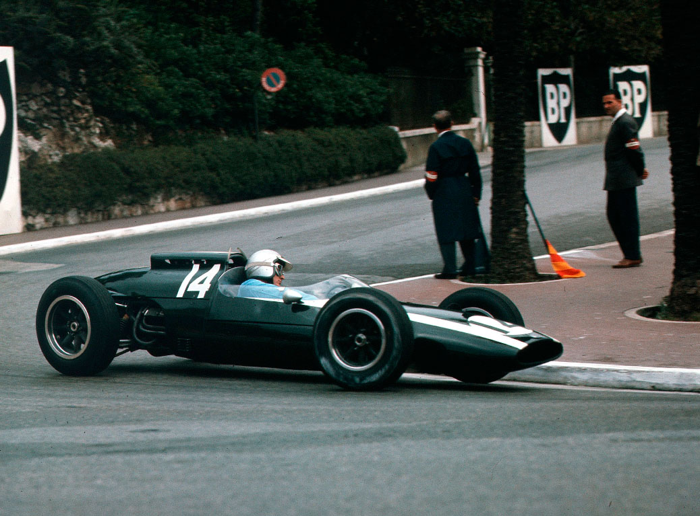
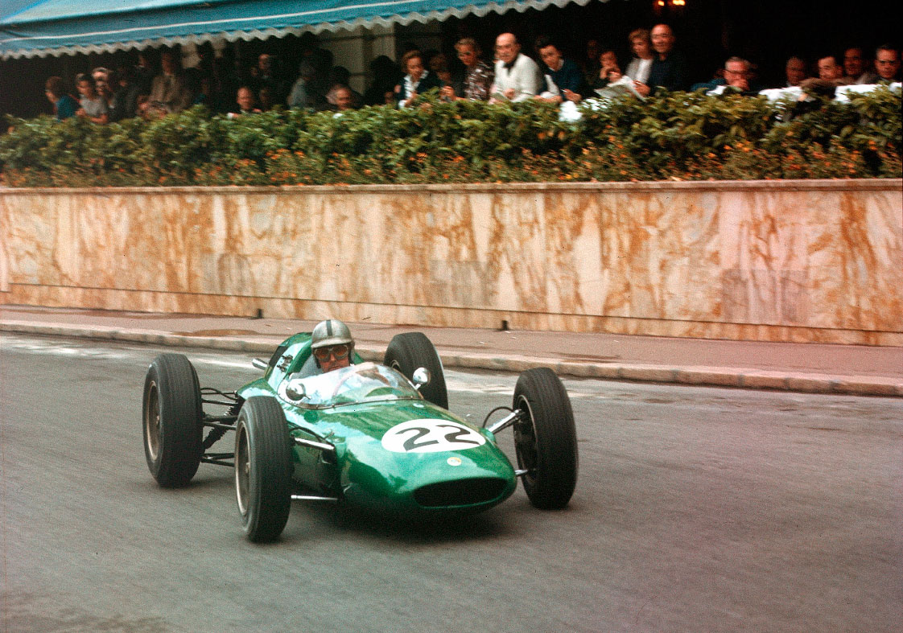
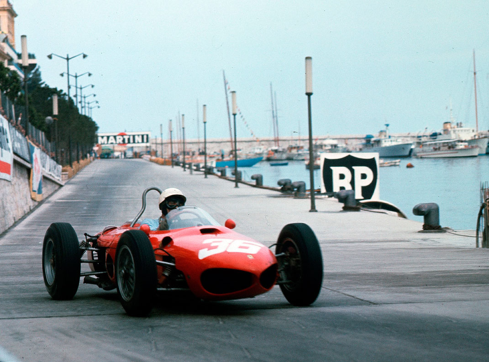
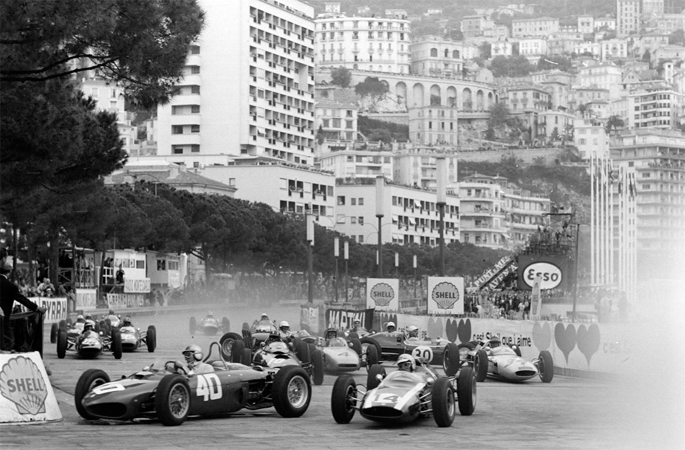
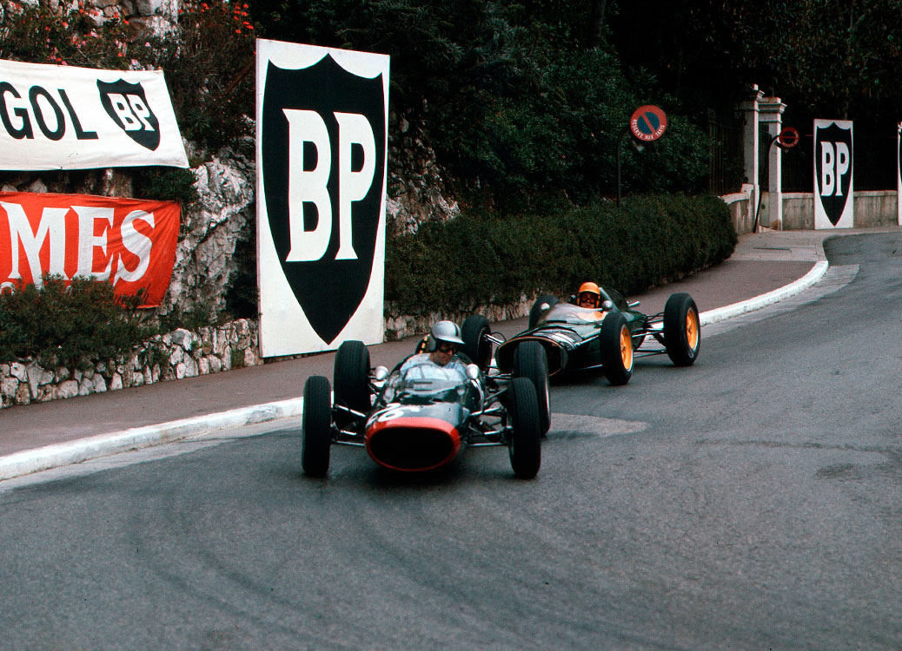

Monte Carlo - 03/06/1962
Dramática vitória de Bruce McLaren

Graham Hill liderou por grande parte da prova, mas teve que lidar com problemas mecânicos em seu carro, McLaren e Brabham travaram uma intensa disputa, até que Brabham sofreu um acidente e abandonou. No final, McLaren manteve a liderança e venceu, a frente de Phil Hill, Bandini, Surtees e Bonnier. Com momentos de grande tensão e muitas reviravoltas, a corrida em Mônaco foi uma verdadeira prova de habilidade e resistência para os pilotos
W. D. Gavin
Embora temporariamente privado do privilégio de ser a grande prova de abertura, o Grande Prêmio de Mônaco provou ser tão popular como sempre, e mais uma vez a principado estava lotada de espectadores, já que milhares vieram para testemunhar esta corrida única pelas ruas de Monte Carlo. A natureza sempre constante do circuito de 3.122 metros fornece um forte vínculo com o passado para os grandes nomes das eras passadas, Nuvolari, Varzi, Caracciola, Farina, Fangio e Ascari, todos tinham testado suas habilidades nesta pista sinuosa e saltado destas mesmas guias brancas. Em tal ambiente, uma corrida dificilmente pode ser outra coisa senão dramática, e este Grande Prêmio de Mônaco de 1962 não seria exceção.
Os Carros
No topo da lista de inscritos estavam as entradas da Porsche, mas o carro que Bonnier pilotava era o quatro cilindros de 1960 que ele tinha corrido até agora nesta temporada sob a bandeira da Scuderia Venezia. Depois de considerar a retirada completa, a equipe acabou levando o oito cilindros de Dan Gurney para Monte Carlo. Desde a Holanda, o enorme tanque de gasolina que cercava o assento tinha sido dividido e a seção traseira removida, de modo que o assento agora estava mais atrás no carro e mais baixo.
Graham Hill escolheu o carro que vinha correndo até agora nesta temporada, a única concessão sendo uma nova seção de nariz mais curta especialmente para o circuito de Mônaco, onde até os pilotos mais estáveis às vezes encontram obstáculos sólidos. O carro de Ginther também teve o nariz reformulado, enquanto o V8 injetado teve um novo sistema de escape, em que os quatro tubos de cada banco convergiram em dois tubos únicos que passam sob a traseira do chassi, esse sistema presumivelmente dando melhores características de torque do que o layout de escape curto. A traseira do chassi foi modificada e uma caixa de câmbio de seis velocidades Colotti Type 34 foi instalada no carro de Ginther. Isso se mostrou bastante insatisfatório na prática, então o californiano optou pelo carro reserva de 1961 com a velha caixa de câmbio de cinco marchas, semelhante à usada por Graham Hill e com motor V8.
A Cooper passou bastante tempo ajustando sua nova caixa de câmbio de seis velocidades, que falhou tanto nos treinos quanto na corrida em Zandvoort, colocando um tipo de eixo novo e mais forte e fazendo com que os seletores funcionassem suavemente. McLaren tinha seu único carro Climax V8, enquanto Maggs usava o antigo carro de quatro cilindros de 1961 da McLaren.
A Equipe Lotus tinha três carros em Mônaco: o Lotus 25 monocoque de Clark com motor Climax V8, o 24 de Taylor com motor Climax V8, além do 24 que Trevor havia usado anteriormente com motor de quatro cilindros, agora equipado com o motor BRM V8 e a caixa de câmbio Colotti Type 34. Foi esse último dispositivo que fez com que os pilotos da Equipe Lotus decidissem não usar o carro após ambos terem experimentado durante os treinos.
Jack Brabham trouxe seu Lotus 24 verde claro enquanto Jackie Lewis correu com o Ecurie Galloise 1961 BRM, equipado com novo motor V8 e transmissão de cinco marchas.
Os Lola-Climax V8 da equipe Bowmaker tiveram a suspensão traseira modificada, com o elo lateral superior agora localizado em uma extensão interna do suporte do cubo da roda. Os pilotos Salvadori e Surtees não foram aceitos como pilotos oficiais da equipe.
O Lotus-Climax 24 V8 da equipe Walker fez sua primeira aparição nas mãos do veterano francês Maurice Trintignant, que derrotou a oposição multicilíndrica em Pau armado com um velho motor de quatro cilindros. Enquanto isso, a equipe UDT-Laystall também tinha dois Lotus 24, o de Ireland sendo um carro novo equipado com motor V8 Climax, enquanto o de Masten Gregory era outro carro novo, mas com motor BRM V8.
A Scuderia Ferrari tinha quatro carros em Monte Carlo e quatro pilotos treinaram. Phil Hill usou seu carro de Zandvoort com uma traseira mais larga que o normal. Os outros carros eram similares, com suspensão dianteira de 1962 e traseira de 1961, e apenas um tinha a nova caixa de seis marchas à frente dos eixos. Os pilotos Lorenzo Bandini, Willy Mairesse e Ricardo Rodriguez treinaram. Baghetti estava presente, mas não recebeu nenhum convite para pilotar. A Scuderia Venezia inscreveu o antigo Lotus 18 de quatro cilindros da equipe Walker para Nino Vaccarella, Carel de Beaufort tinha seu Porsche de 1960 e Joseph Siffert o Lotus 21 da Ecurie Filipinetti com motor Climax de quatro cilindros.
John Cooper e Bruce McLaren ficaram de pé em posição firme na presença do príncipe Rainier e da princesa Grace durante a execução do hino nacional. A vitória da McLaren confirmou que Mônaco era um terreno de caça feliz para os Cooper, depois de uma ausência de dois anos durante os quais a virtuosidade de Moss/Lotus atrapalharam.
O limite de carros na pista de Mônaco para carros de Fórmula 1 é de dezesseis, supostamente por questões de segurança. Assim, os organizadores aceitaram dois carros de fábrica de Ferrari, Porsche, Lotus, BRM e Cooper, deixando seis vagas a serem decididas pelos tempos de treino dos onze pilotos restantes. Parece estranho que vinte carros da Fórmula Júnior tenham sido permitidos na corrida, pois eles têm dimensões muito semelhantes às dos carros de Fórmula 1 mais recentes, enquanto os pilotos da Fórmula Júnior têm muito menos experiência nesse tipo de corrida do que a maioria dos pilotos de Fórmula 1.

OS TREINOS
Com seus novos motores de oito cilindros, os carros britânicos eram mais de dois segundos mais rápidos do que durante a primeira sessão de treinos do ano anterior. Mais uma vez, foi Jim Clark quem fez o melhor tempo do dia, completando a volta com o 25 em 1.37:4. Graham Hill foi 0,3 segundos mais lento, enquanto John Surtees, que precisava se classificar, garantiu sua posição nesta primeira sessão com um tempo de 1.37:9. Phil Hill passou grande parte do treino parado enquanto os mecânicos trocavam as molas traseiras, mas houve alguma melhora, resultando no quarto tempo mais rápido para Phil, com 1.38:0, apenas dois décimos mais rápido que Dan Gurney no Porsche de oito cilindros.
A segunda sessão logo na manhã de sexta-feira encontrou a pista quase inundada por causa da forte chuva, e ela ficou consistentemente pior à medida que a chuva continuou durante toda a sessão. Graham Hill emergiu como o mais rápido em 1.58:3", com Willy Mairesse apenas um segundo mais lento. Vaccarella estava muito rápido com o Lotus da Venezia no molhado, assim como havia feito em Bruxelas, e mais uma vez ele o amassou! Muitas pessoas pareciam estar com problemas de carburador e, no final do treino, a única pessoa na pista era de Beaufort, tentando obter o máximo de prática possível na chuva. Ele ainda não havia recuperado total confiança na pista molhada após aquele terrível acidente no topo do banking em Avus em 1959.
As condições molhadas da segunda sessão não ajudaram os pilotos que precisavam se classificar, então poucos perderam tempo para começar o treino final de 90 minutos no sábado à tarde. Clark e Graham Hill foram novamente os mais rápidos com 1.35,4" e 1.35,8 respectivamente. Bruce McLaren se juntaria a eles na primeira fila do grid com 1.36,4". Willy Mairesse estava acelerando muito para registrar o mesmo tempo, assim como Dan Gurney. As duas primeiras filas do grid ficaram com Lotus, BRM, Cooper, Ferrari e Porsche. Quem poderia pedir por uma disputa mais equilibrada do que essa? Entre os que precisavam se classificar, Jack Brabham e Maurice Trintignant marcaram 1.37 em seus carros Lotus 24 com motor V8 Climax, e Innes Ireland fez um tempo semelhante, embora só tenha sido encontrado nos registros após o tempo oficial ter sido publicado. Pobre Innes sofreu como um dos não classificados por algumas horas. Phil Hill melhorou para 1.37,1, apenas um décimo mais rápido que seu companheiro de equipe Bandini, que se adaptou às corridas de Fórmula 1 no circuito de rua como um pato na água. Surtees danificou seu carro levemente, mas seu tempo do primeiro dia lhe garantiu o quinto lugar entre os classificados, enquanto o último lugar foi para seu companheiro de equipe Roy Salvadori.
O suíço Joe Siffert foi magnífico em seu Lotus de quatro cilindros, registrando 1.38,9", a terceira melhor volta já registrada para um motor de quatro cilindros de meio litro em Monte Carlo, com apenas Moss e Bonnier tendo feito voltas mais rápidas na corrida de 1961. Joe estava na primeira fila antes dos oficiais da equipe UDT apontarem o erro na exclusão de Ireland. Jackie Lewis também não conseguiu se classificar após lutar com seu BRM de 1961 e passar pela vergonha de ser ultrapassado por carros de quatro cilindros nas partes mais rápidas do circuito, quando o motor V8 não puxava. Pelo terceiro ano consecutivo, Masten Gregory não conseguiu largar após ter diversos problemas com seu Lotus-BRM, incluindo a perda da valiosa primeira marcha. Rodriguez, que havia usado o carro da equipe nos dois primeiros dias, não treinou no terceiro e não se classificou.

A CORRIDA
No dia da corrida, a tarde estava bastante nublada e havia ameaça de chuva. Algum tempo antes do início, houve uma leve chuva que deixou a pista um pouco úmida. Enquanto os carros aqueciam no grid, o barulho dos onze motores de oito cilindros e dos três motores de seis cilindros ecoavam pelas paredes da avenida estreita, fazendo o som mais emocionante em muitos anos. Louis Chiron explicou aos pilotos seu método pitoresco de largada com contagem regressiva, e Rene Dreyfus traduziu para o inglês. Quando a bandeira baixou, Mairesse disparou na liderança da segunda fila, empurrando Jim Clark e Graham Hill no processo. Em seguida, na abordagem congestionada para a curva do Gasômetro, Richie Ginther encontrou o acelerador preso totalmente aberto quando tentou desligá-lo. O carro primeiro atingiu o Lotus de Trintignant, depois o Lotus de Ireland levou uma pancada forte na traseira, assim como o Porsche de Gurney, enquanto Taylor perdeu a maior parte da parte dianteira de seu Lotus de fábrica. Os carros de Ginther e Trintignant ficaram destruídos, enquanto Taylor, Ireland e Gurney pararam nos boxes, onde Gurney se retirou. Os mecânicos da equipe Lotus removeram o que restou da parte dianteira do carro de Taylor, verificaram as conexões da mangueira de óleo e água e ele partiu assim que os líderes chegaram ao porto. Bruce McLaren liderava a frente de Graham Hill, Mairesse havia rodado no Hairpin da Estação; em terceiro estava Phil Hill, com Bonnier logo à frente de Bandini. Jim Clark estava funcionando em seis cilindros, mas estava atualmente à frente de Maggs, Surtees, Brabham e Salvadori. Mairesse em segundo lugar, vários segundos à frente de Trevor Taylor.
Na volta seguinte, McLaren se afastou um pouco de Graham Hill, enquanto Phil Hill em terceiro lugar foi forçado por seu jovem companheiro de equipe Bandini, que ultrapassou Bonnier e assumiu a quarta posição. Brabham recuperou muito terreno e ultrapassou Clark, Bonnier, Maggs, Surtees e Salvadori. Graham Hill logo entrou em seu ritmo, de modo que, após cinco voltas, Bruce McLaren liderava apenas por um segundo e duas voltas depois cedeu a liderança. A dupla de líderes havia aberto vários segundos em relação a Phil Hill, que por sua vez estava à frente de Bandini. Jack Brabham havia recuperado muito do tempo perdido na primeira volta e estava próximo do segundo Ferrari; ele passou para o quarto lugar na volta seguinte. O motor de Clark ainda estava falhando e ele tentava limpar as velas desligando a bomba de combustível para enfraquecer a mistura, uma manobra que eventualmente funcionou algumas voltas depois. Surtees tinha deslocado Maggs e Bonnier, enquanto Mairesse estava se aproximando do sueco em seu antigo Porsche Venezia. A suspensão dianteira do Lola de Salvadori estava tocando o chão e ele havia caído para a décima primeira posição, à frente de Trevor Taylor e Innes Ireland, que havia retomado a corrida duas voltas atrás.
Graham Hill abria cerca de meio segundo por volta para McLaren. Logo ficou claro que o terceiro lugar de Phil Hill estava em perigo, apesar do americano estar se saindo esplendidamente na Ferrari. Com Jim Clark em sua cola, Brabham encontrou um pouco mais de ritmo e os carros da Lotus forçaram Hill ao erro e passaram a Ferrari na 12ª volta. Nesta fase, Clark estava pronto para ultrapassar Brabham, mas na 14ª volta sua embreagem falhou, assim como em Zandvoort. O escocês perdeu um pouco de terreno antes de se acostumar novamente à operar a caixa de câmbio sem embreagem, quando já era óbvio que Brabham não estava tornando as coisas fáceis para ele.

Finalmente, na volta 22, Clark ultrapassou o Lotus 24 de Brabham e ficou em terceiro lugar, cerca de seis segundos atrás de McLaren, que estava a sete segundos do líder Graham Hill. McLaren acelerou para ficar à frente do escocês, para que nas próximas voltas a vantagem de Graham Hill permanecesse em torno de sete segundos. Com 25 voltas, a ordem era G. Hill, McLaren, Clark, Brabham, P. Hill, Surtees, Maggs (uma volta atrás dos líderes), Bonnier, Salvadori, Mairesse. Ireland estava agora três voltas atrás. Trevor Taylor, depois de algumas paradas para investigar vazamentos de óleo, ainda não havia completado vinte voltas.
Clark estava realmente dando tudo em sua pilotagem: seu estilo usualmente relaxado havia dado lugar a um estilo muito mais agressivo. Com o rosto tenso em uma expressão de determinação e sua grande habilidade natural agora aumentada por uma grande vontade de vencer, ele lançava o Lotus pelas tortuosas ruas de Monte Carlo, chegando cada vez mais perto do recorde de volta de McLaren estabelecido no Cooper de 2,5 litros em 1960. Na volta 28, ele igualou o recorde, e esse feito o levou à frente do neozelandês para assumir a segunda posição.
Na liderança, Graham Hill continuava sem problemas, e até conseguiu aumentar um pouco a velocidade. Mas gradualmente, Clark foi diminuindo a vantagem, mesmo que fosse apenas dois décimos por volta, embora os intervalos oscilassem à medida que o líder e o segundo lugar ultrapassavam a metade de trás do pelotão pela segunda vez. Clark estava agora batendo o recorde antigo de volta, baixando-o sucessivamente para 1.36.1 e depois para 1.35.8 na volta 39, de modo que quando 40 voltas foram completadas, ele havia reduzido a liderança de Graham para apenas 1,5s. Quando parecia certo que Clark assumiria a liderança, Graham encontrou Bandini e Surtees, que estavam lutando bravamente pelo sexto lugar. Ele passou pelos dois em uma volta, mas Jim ficou preso entre Surtees e Bandini durante a setor apertado do Casino até o porto. Então Graham colocou Innes Ireland entre ele e Jimmy, quando o BRM ultrapassou pela nona vez o Lotus 24 da UDT-Laystall, tendo passado um tempo nos pits tentando resolver problemas de falta de combustível e uma conexão de marchas que havia sofrido na batida do Gasômetro. Então logo ficou óbvio que Clark estava com problemas, pois ele caiu para trás de Ireland na volta 47.
Graham Hill agora se afastava enquanto Clark lutava com uma caixa de câmbio sem a quarta e quinta marchas. Surtees e Bandini ultrapassaram ele ainda uma volta atrás enquanto Clark acelerava a Climax V8 até 9.500 rpm em terceira marcha ao longo da "Mirabeau". Com a corrida pela metade, a liderança de Graham Hill era de quase oito segundos, enquanto Clark estava muito à frente do terceiro colocado, McLaren, fato que aparentemente sua equipe não o informou. Brabham estava um pouco atrás de McLaren e Phil Hill em quinto lugar havia acelerado. Quando se aproximou de Mairesse, o belga de repente se soltou, e levou mais de dez voltas para Hill ultrapassar seu companheiro de equipe! No entanto, esta pequena briga o aproximou bastante de Brabham. Surtees era o sexto, um pouco à frente de Bandini, enquanto Bonnier, oitavo lugar, estava a duas voltas do líder e apenas alguns segundos à frente de Mairesse. Salvadori passou pelos pits, assim como Maggs, que perdeu a quinta e sexta marchas. Ireland estava nove voltas atrás enquanto Trevor Taylor, com os pés e óculos cobertos de óleo, abandonou o 24 da equipe. O motor de Clark durou apenas mais cinco voltas antes de explodir, acabando com uma grande corrida em que ele lidou com um carro doente desde o início, com habilidade refinada por uma determinação que seria útil quando ele tivesse um carro capaz de durar a corrida.

Com cerca de 45 segundos de vantagem sobre McLaren, Graham Hill ficou grato por poder relaxar um pouco e, embora uma volta atrás, Surtees perseguiu de perto o líder por várias voltas. Surtees parecia desconfortável com a dirigibilidade da Lola e claramente estava fazendo um grande esforço. Com 70 das 100 voltas completas, a liderança de Hill era um pouco mais de um minuto, mas ele já havia notado uma preocupante queda na pressão do óleo. Cerca de dez segundos atrás de McLaren estava Jack Brabham, com Phil Hill agora em seu encalço, os dois campeões tendo um ótimo duelo. Surtees ainda estava correndo logo atrás de Graham Hill e não muito à frente de Bandini, que estava certamente causando uma boa impressão em sua estreia em um Ferrari. O resto do pelotão estava bem atrás, Mairesse três voltas atrás, Bonnier quatro e Ireland 15. O principal interesse agora se concentrava na perseguição de Hill a Brabham, pois ambos estavam circulando muito rapidamente e parecia que Phil estava determinado a melhorar sua posição. Isso ele fez na volta 75, quando Jack atingiu uma guia no Casino, obrigando-o a abandonar com um braço de suspensão quebrado no Lotus. Algumas voltas depois, Surtees ultrapassou Graham Hill, mas a Lola teve um pequeno problema na curva do tabaco, onde bateu no guardrail, fazendo com que Bandini o ultrapassasse e alcançasse o quarto lugar, para a imensa alegria do público pró-italiano.
Enquanto isso, o pobre Graham Hill estava cuidando muito do seu carro na frente, esperando contra toda a esperança (como só um piloto da BRM pode esperar) que o carro durasse até o final. O manômetro de pressão não registrava nada há algumas voltas. Ele sentia os rolamentos indo embora, mas teve que continuar com a esperança de que, por algum milagre, eles pudessem durar mais dez voltas, mas não foi o caso. Quando completou sua 92ª volta, o motor soou muito doente, e não foi surpresa quando ele não apareceu novamente. O motor finalmente explodiu, deixando uma trilha de óleo no caminho até a Estação. Quando McLaren passou na liderança na sua 94ª volta, Mairesse chamou nos boxes para abandonar.
A batalha de Hill com Brabham o trouxe a apenas doze segundos de McLaren, e agora que havia uma chance de vitória, o líder da Ferrari fez tudo o que podia, diminuindo em dois ou três segundos por volta. McLaren continuou a andar de maneira calma em 1.40s por volta enquanto a pressão arterial de John Cooper subia constantemente. Bruce começou a última volta com menos de quatro segundos de vantagem, mas com Phil Hill em forma incrível tudo era possível. Mas Bruce se manteve calmo para chegar na chicane cerca de dois segundos à frente de Phil e liderar ao redor do porto, passando pela curva da Tabacarias e cruzando a linha de chegada, levando a bandeira quadriculada para a sua primeira vitória em mais de dois anos. John Cooper estava em sua rolagem de vitória enquanto Hill cruzava a linha de chegada a apenas 1.3s de McLaren, após uma última tentativa determinada pela vitória que manteve o interesse nesta corrida repleta de incidentes até a bandeira quadriculada. O terceiro lugar foi para Lorenzo Bandini, depois de uma excelente corrida. Surtees foi o quarto e último a terminar, mas ao estilo monegasco, Bonnier, que se retirou alguns minutos antes do final, foi classificado em quinto lugar, e, da mesma forma, Graham Hill em sexto, Mairesse em sétimo e Brabham em oitavo.